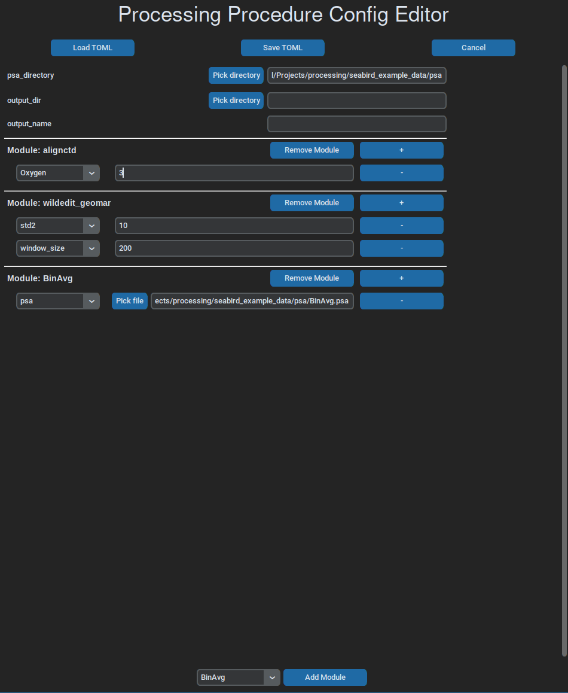

Usage¶
Installation¶
This software can be used in a few different ways. To run processing workflows, called ‘procedures’, there is a command line cli, that resides in main.py and runs workflow files on given CTD data files.
The easiest way to install CLI interface called ‘ctdam’ is to use uv or pipx:
$ uv tool install --from 'ctdam[all]' ctdam
$ uv run ctdam check
All set, you are ready to go.
$ pipx install ctdam
$ ctdam check
All set, you are ready to go.
Otherwise, via basic python package managers, like pip, conda or poetry:
# using pip
$ python -m venv .venv
$ source .venv/bin/activate
$ pip install ctd-processing
$ python src/processing/main.py check
All set, you are ready to go.
# using poetry
$ poetry install
$ poetry env activate
$ ctdam check
All set, you are ready to go.
CLI¶
The CLI ‘ctdam’ should be the main entry point to the software. It allows running and editing of procedure workflows. It features the following commands:
$ ctdam --help
Usage: ctdam [OPTIONS] COMMAND [ARGS]...
╭─ Options ────────────────────────────────────────────────────────────────────────────────────────────────────────╮
│ --install-completion Install completion for the current shell. │
│ --show-completion Show completion for the current shell, to copy it or customize the installation. │
│ --help Show this message and exit. │
╰──────────────────────────────────────────────────────────────────────────────────────────────────────────────────╯
╭─ Commands ───────────────────────────────────────────────────────────────────────────────────────────────────────╮
│ run Processes one target file using the given procedure workflow file. │
│ convert Converts a list of Sea-Bird raw data files (.hex) to .cnv files. │
│ batch Applies a processing config to multiple .hex or. cnv files. │
│ edit Opens a procedure workflow file in GUI for editing. │
│ show Display the contents of a procedure workflow file. │
│ check Assures that all requirements to use this tool are met. │
╰──────────────────────────────────────────────────────────────────────────────────────────────────────────────────╯
The top three commands are the commands to run processing workflows, while the other ones are for editing workflow files and general checking whether the requirements are met.
To get more specific information to the individual commands and their arguments, you can display help sites for each of them:
$ ctdam batch --help
Usage: ctdam batch [OPTIONS] INPUT_DIR CONFIG
Applies a processing config to multiple .hex or. cnv files.
Parameters ---------- input_dir: Path | str : The data directory with the target files. config: dict | Path | str: Either an explicit config as dict or a path to a .toml config file. pattern: str : A
name pattern to filter the target files with. (Default is ".cnv")
Returns ------- A list of paths or CnvFiles of the processed files.
╭─ Arguments ───────────────────────────────────────────────────────────────────────────────────────────────────────────────────────────────────────────────────────────────────────────────────────────────────────╮
│ * input_dir TEXT [default: None] [required] │
│ * config TEXT [default: None] [required] │
╰───────────────────────────────────────────────────────────────────────────────────────────────────────────────────────────────────────────────────────────────────────────────────────────────────────────────────╯
╭─ Options ─────────────────────────────────────────────────────────────────────────────────────────────────────────────────────────────────────────────────────────────────────────────────────────────────────────╮
│ --pattern TEXT [default: .cnv] │
│ --help Show this message and exit. │
╰───────────────────────────────────────────────────────────────────────────────────────────────────────────────────────────────────────────────────────────────────────────────────────────────────────────────────╯
Processing workflows¶
The workflow files configure everything needed to run a processing procedure and are easy to understand and write.
Another way is to run processing procedures directly from your python code, using either workflow files or the fact that these workflows correspond to a basic python dictionary internally. This allows for quick scripts that can use flexible input variables.
Warning
To run Sea-Bird processing modules, you need a local installation of them, from their website.
from ctdam.proc import Procedure
# using own dictionary:
proc_config = {
"psa_directory": "path_to_psas",
"output_dir": "path_to_output",
"modules": {
"datcnv": {"psa": "DatCnv.psa"},
"wildedit_geomar": {"std1": 3.0, "window_size": 100},
"celltm": {"psa": ("CellTM.psa")},
},
}
procedure = Procedure(proc_config)
# using a .toml workflow file:
procedure = Procedure("proc_template.toml")
Workflow files¶
The workflow dictionary used in the example above corresponds to this .toml workflow file:
# example_config.toml
psa_directory = "path_to_psas"
output_dir = "path_to_output"
[modules.datcnv]
psa = "DatCnv.psa"
[modules.wildedit_geomar]
std1 = 3.0
window_size = 100
[modules.celltm]
psa = "CellTM.psa"
It does not matter, which way you provide the processing workflow information, the two above examples work in exactly the same way. The different options available and how to use them, are shown below:
# path to a target file
input = ""
# the directory where all psas for this workflow reside
psa_directory = ""
# path to target xmlcon if not in the same directory with the same name as hex
xmlcon = ''
# the value to flag bad values with
bad_flag = -9.990e-29
# whether to cut the downcast and work only on that
downcast_only = true
# whether to remove data rows with bad flag
remove_flags = true
# whether to write to disk
output_type = 'cnv'
# the name of the new file, if none, the input files name will be used
output_name = ''
# the path to the output directory to store the new file in, if none, the input
# directory will be used
output_dir = '.'
# the parameters to print to the file, non-existent ones will be skipped
output_columns = [
"Pressure",
"Temperature",
"Salinity",
"Oxygen",
"Fluorescence",
"Turbidity",
"PAR",
"SPAR",
'Time',
"Latitude",
"Longitude",
]
# the individual modules to run on the input data
## to run Sea-Bird processing executables, the key 'psa' is needed for
## distinguising.
[modules.wildedit_geomar]
[modules.wfilter]
[modules.alignctd]
[modules.celltm]
[modules.create_bottle_file]
# all gsw function names are understood and can be used here
[modules.entropy_from_CT]
[modules.binavg]
Tip
The only mandatory option is the modules dictionary, describing the steps to run on the file(s). All other options are optional.
A simple gui can be used to write and edit workflow files, which, at the moment, is run like this:
ctdam edit path_to_toml.toml

Note
All options for the Procedure class can be found here.